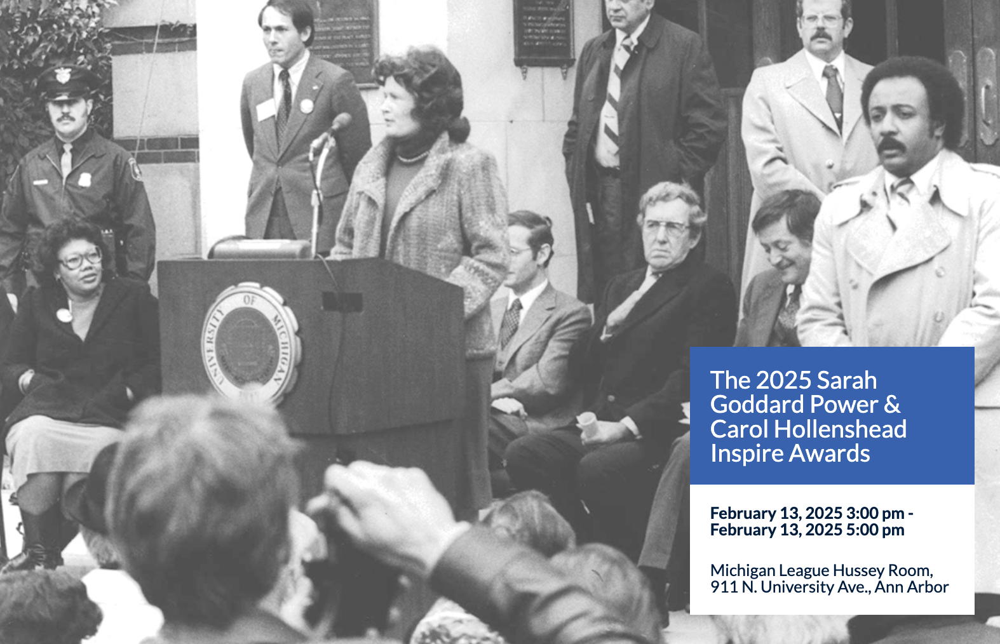
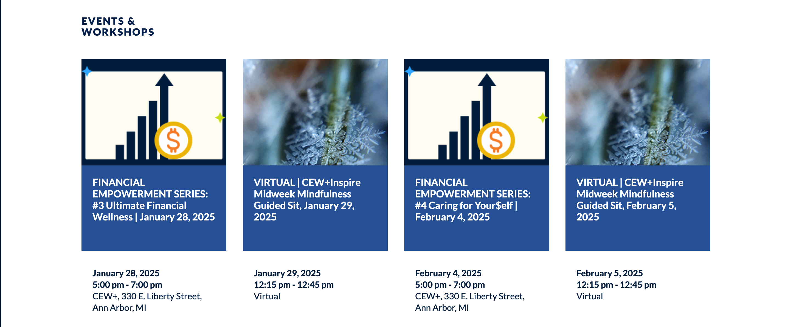

At CEW+, we navigate circumstantial barriers by providing academic, financial, and professional support to
help you reach your personal potential. Established to support women through higher education, we lift
up women and all underserved communities at U-M and beyond. Through career and education counseling,
funding, workshops, events, and a diverse, welcoming community, we exist to empower. We are CEW+, and
we’re here to help you reach your potential.

Historical photo of a woman delivering a speech.

Upcoming CEW+ events and workshops.
NEWS
Support CEW+ today on #GivingTuesday!
December 2, 2024
HAPPY GIVING TUESDAY 2024! Today, the University of Michigan will join thousands of organizations
from across the world by participating in Giving Tuesday. You can support dozens of inspiring projects
and…
2024 CEW+ Scholarship Awards Ceremony
November 5, 2024
The CEW+ Scholarship Awards Ceremony on October 27th was a joyful and exciting event as friends and
supporters celebrated the latest group of scholarship recipients. These 113 outstanding individuals
joined over…
Apply Now for a Fall 2024 CEW+ Graduation Grant
October 11, 2024
The Fall 2024 CEW+ Graduation Grant Application Cycle is now open. Deadline is Friday, November 8,
2024 at 11:59 PM. Click here to learn more about the program, eligibility, and the…
CEW+ awards over $870k in scholarship and fellowship funds to 113 U-M students
October 11, 2024
CEW+ is pleased to welcome the 2024-25 cohort of 100 scholarship recipients and 13 graduate fellows to
the CEW+ Scholar community. CEW+ awarded over $870,000 in scholarship and fellowship funds to…